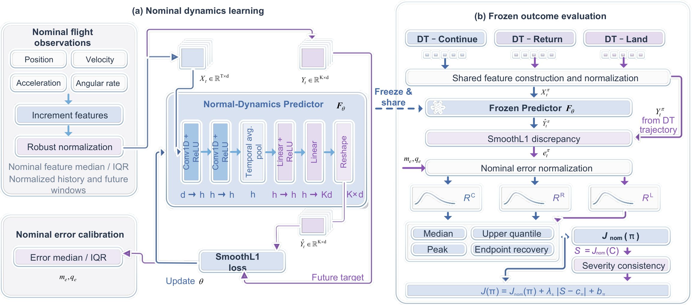
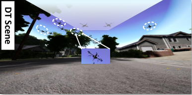
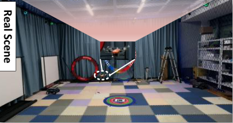
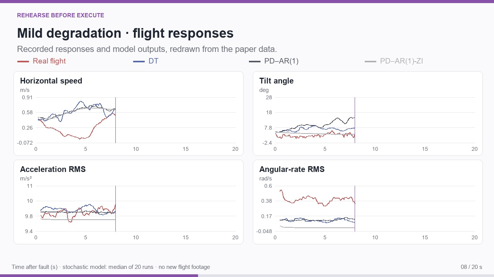
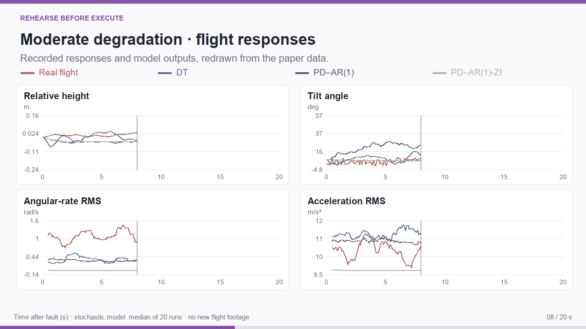
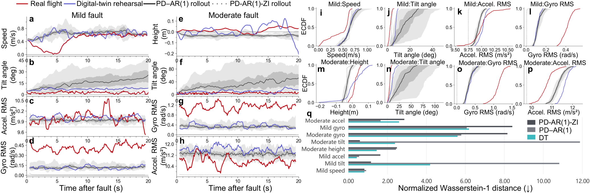
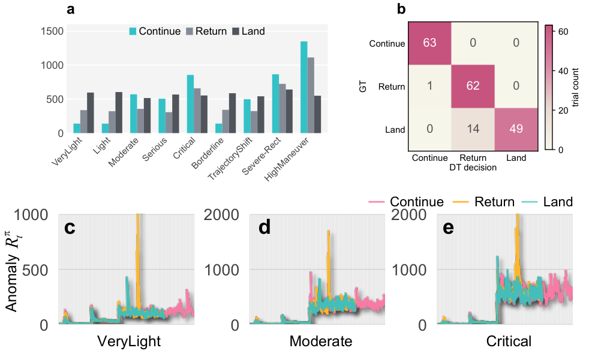
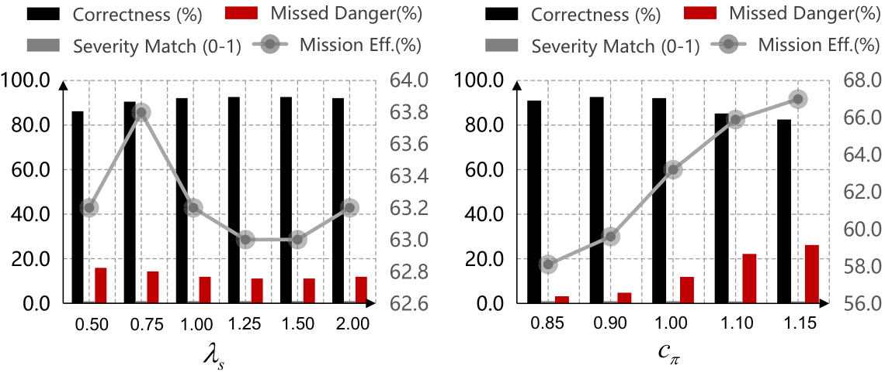
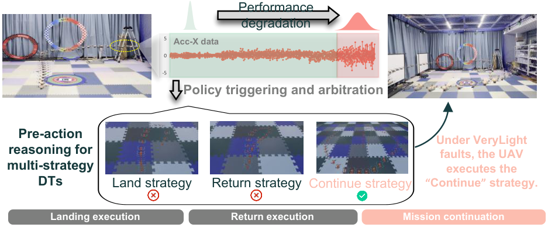
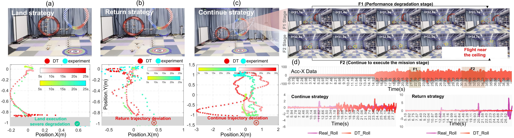

Method: Rehearse before execute

Shared normal-dynamics evaluator

J(π) = Jnom(π) + λs |S − cπ| + bπ, S = Jnom(Continue).
After recoverable degradation, an unmanned aerial vehicle may still continue its mission, return, or land. Fault severity alone cannot describe the consequences of these actions. Rehearse Before Execute uses a digital twin (DT) to virtually execute candidate recovery commands and compare their responses before committing to an action. A shared normal-dynamics evaluator quantifies dynamic deviations and recovery trends. The resulting candidate costs are combined with a Continue-based severity reference and expert intervention priors. The study connects flight-response fidelity, recovery-policy selection, and physical candidate-action execution. On 189 retrospective replay records, Proposed achieves 92.06% expert policy agreement, compared with 69.84% under alternative PD–AR(1) propagation. Component analysis identifies the Continue-reference pathway as the main source of current policy separation, with candidate costs refining the ranking. These results establish an initial basis for consequence-informed recovery in the evaluated settings.

Left — Selection without explicit rehearsal: predefined contingency logic or a learned policy maps the observed condition to an action. The decision can be efficient, but does not necessarily expose comparable trajectories for the alternatives.
Right — Rehearse before selection: the DT virtually executes each configured candidate under the current degraded condition. The shared evaluator compares the responses and selects one command for physical execution. The purpose is to inspect action-dependent consequences, rather than infer them solely from an action label.
Compare the same action phase. The RflySim toolchain and physical UAV recordings now share an estimated action-relative clock. For Return and Land, zero marks each recording's logged recovery command; for Continue, it marks fault onset while the mission is retained. Enlarged views, a moving cursor on the logged height traces, and separate fault-to-action timelines connect what the aircraft does with when it happens. Both videos play at the same 0.5× speed, preserving their relative timing and recorded command delays.
Continue retains the waypoint mission, Return initiates the configured return procedure, and Land initiates local landing. The three columns use the same motion-animation format to make the alternatives directly inspectable. In the reported mild case, Continue has the lowest composite cost; in the severe case, Land has the lowest cost. The paths are newly created schematic animations, while the displayed costs come from the paper. They are not new simulation outputs or flight recordings.




The FS-X150/PX4 platform connects flight observations, recovery commands, and RflySim/CopterSim through ROS. The videos above redraw existing response data over the first 20 seconds after fault onset, covering speed or height, tilt, acceleration root mean square (RMS), and angular-rate RMS. Red denotes real flight; blue-purple denotes DT. PD–AR(1) combines proportional–derivative feedback with first-order autoregressive residuals; ZI denotes its zero-innovation variant. Stochastic curves show the median over 20 runs. These videos present recorded and computed responses, not footage of additional experiments.

Responses shown in panels (a–h) · Normalized Wasserstein-1 distance (lower is better).
| Condition | Response | DT | PD–AR(1) | PD–AR(1)-ZI |
|---|---|---|---|---|
| Mild | Horizontal speed | 0.817 | 0.910 | 0.820 |
| Mild | Tilt angle | 4.194 | 10.818 | 1.163 |
| Mild | Acceleration RMS | 0.433 | 0.550 | 1.636 |
| Mild | Angular-rate RMS | 6.187 | 6.070 | 8.414 |
| Moderate | Relative height | 1.452 | 2.437 | 2.491 |
| Moderate | Tilt angle | 2.393 | 11.876 | 0.589 |
| Moderate | Angular-rate RMS | 5.603 | 5.788 | 8.158 |
| Moderate | Acceleration RMS | 2.603 | 1.648 | 2.869 |
DT gives the closest distributional match in four of the eight plotted responses, compared with two for PD–AR(1) and two for its zero-innovation variant. Its advantages span mild-fault horizontal speed and acceleration, and moderate-fault relative height and angular rate. The table follows the eight responses already shown in panels (a–h); this count describes that figure-defined subset, not every measured variable. Green bold values identify the lowest distance in each row.

Decision comparison on 189 retrospective replay records.
| Method | Policy agreement (%) ↑ | Severity match ↑ | False abort (%) ↓ | Missed danger (%) ↓ |
|---|---|---|---|---|
| Reactive | 35.45 | 0.6772 | 93.65 | 0.00 |
| Rule | 66.67 | 0.8333 | 0.00 | 50.00 |
| Fixed Return | 33.33 | 0.6667 | 100.00 | 50.00 |
| Fixed Land | 33.33 | 0.5000 | 100.00 | 0.00 |
| DT clipped anomaly | 13.76 | 0.3651 | 93.65 | 73.81 |
| DT normality only | 32.80 | 0.5238 | 87.30 | 24.60 |
| DT quadratic scoring | 91.01 | 0.9497 | 0.00 | 10.32 |
| PD–AR(1) rollout | 69.84 | 0.8492 | 0.00 | 45.24 |
| Proposed | 92.06 | 0.9603 | 0.00 | 11.90 |
Proposed reaches 92.06% policy agreement with zero false aborts. Replacing direct scoring with a quadratic cost changes agreement to 91.01%; replacing propagation with PD–AR(1) changes it to 69.84%. The Continue reference supplies most of the current policy distinction: the reference-only rule reaches 91.53%, and removing severity consistency reduces agreement to 32.80%. Direct candidate costs refine response rankings within this reference. The 189 records comprise nine original cases and 180 statistical augmentations, rather than 189 independent physical trials.
| Component comparison | Policy agreement (%) | Missed danger (%) |
|---|---|---|
| Proposed | 92.06 | 11.90 |
| Remove severity consistency | 32.80 | 24.60 |
| Remove direct-cost median | 88.89 | 16.67 |
| Remove direct-cost peak | 91.01 | 13.49 |
| Remove Continue-reference peak | 69.84 | 45.24 |
| Remove peak in both pathways | 66.14 | 50.79 |
| Clip Continue anomalies in reference | 35.45 | 96.83 |

The direct median describes persistent deviations and the peak captures extreme excursions. The reference peak also changes the common intervention scale. Policy agreement stays between 86.24% and 92.59% over the tested severity weights; center scaling shifts intervention tendencies more strongly.


| Case | Selected | JC | JR | JL | Duration C / R / L (s) |
|---|---|---|---|---|---|
| A3-C | Continue | 138.7 | 349.1 | 592.9 | 32.2 / 13.2 / 10.1 |
| A9-F8 | Return | 562.5 | 244.3 | 483.3 | 32.1 / 13.4 / 10.3 |
| A15-R | Land | 805.8 | 536.4 | 520.3 | 24.5 / 13.5 / 10.3 |
Recovery manoeuvres have their own dynamic costs. In the mild case, Return reaches a larger acceleration peak than Continue despite being a more conservative mission mode. In the severe case, Land has the lowest candidate cost and a shorter recorded flight duration. Together with response fidelity and component analysis, physical execution motivates considering both continued-flight degradation and the consequences of intervention. This initial study covers graded accelerometer noise and indoor execution; future work will extend the fault range and operating environments and address real-time synchronization, rehearsal, and command-activation deadlines.